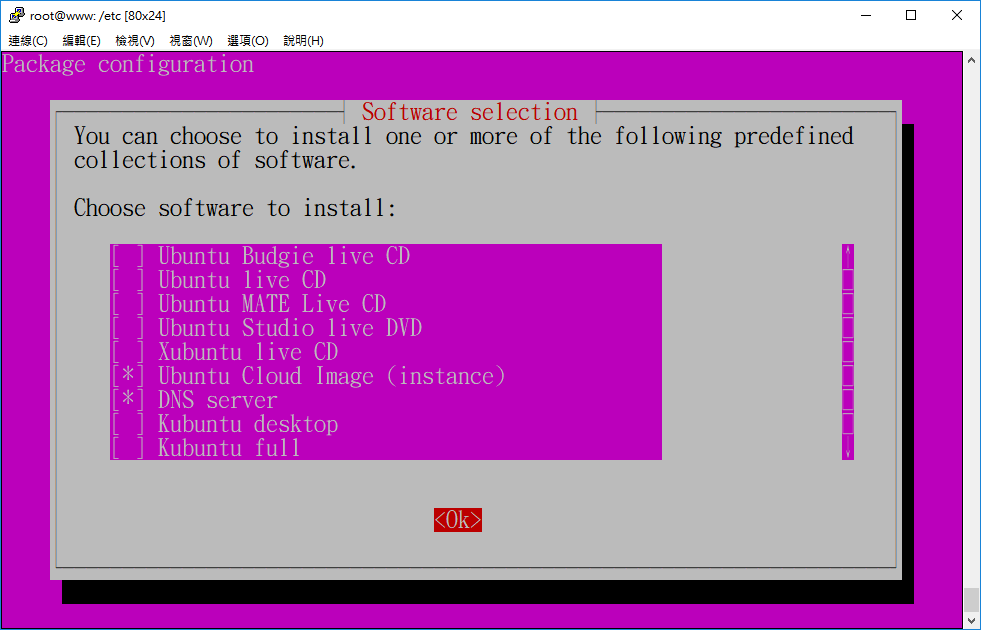
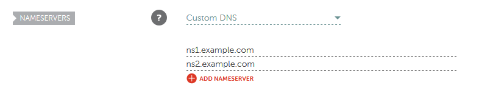
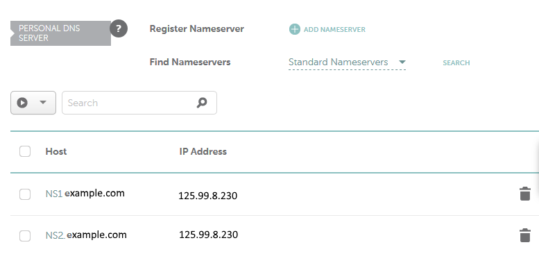
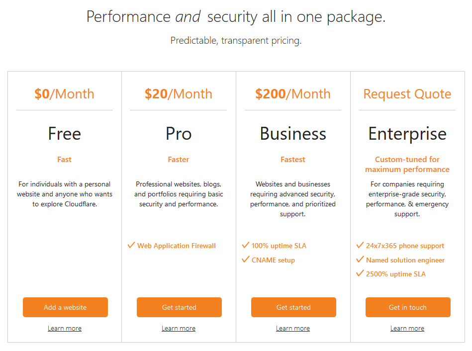
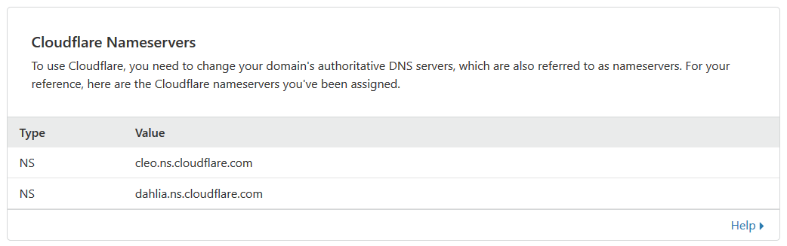

Ubuntu 19.04 and CloudFlare Free DNS
目前許多公司或個人，在租用ADSL或光纖時，選擇固定IP， 或是去雲端主機商，例如Amazon, Linode, Digital Ocean 租 一台 VPS (Virtual Private Server)，也會有固定IP。 有了固定IP，通常會去申請一個自己的 domain name，好做 一些個人網站或電子商務等。
所使用的 domain 註冊公司，不外乎是 namecheap.com 或是 Godaddy.com 為大宗，因為通常他們兩家最便宜。 然後就需要處理專屬於自己的 domain 的 Master DNS Server 了。
Master DNS Server 可以建在自己的固定 IP，但是我想大多數人 大概就是開個小網站，不會租超大頻寬。所以還是使用知名的 Free DNS Hosting Providers 服務，不但節省頻寬，載入網頁也 因為解析域名超快而整體快一點點。
Free DNS Hosting Providers 又根據不同的公司有不同的限制。 幾年前， namecheap.com 有提供 Free DNS Server，結果我域名 搬去namecheap.com 時，Free DNS Server 反而不能用，似乎是要 另外花錢買服務才有，(最近 namecheap.com 才推出 basic dns server 選項)，所以當時我就搬到 freedns.afraid.org。可是 麻煩又來了，freedns.afraid.org 會希望使用者贊助，或是半年 登入一次，不然就賣不然就賣給亂七八糟的人增加幾個 hosts。 例如，假設我擁有 example.com，就莫名其妙被加了一台 z.example.com ，然後指向很奇怪的IP 。
到了今天，Free DNS Hosting Providers 的選擇就更多了，評估了一下，決定 搬到 CloudFlare 的 Free DNS ，因為CloudFlare 是兵強馬壯的 賺錢公司，又大又快，而且不是靠 Free DNS 賺錢， 這個服務應該是可以用很久。
嚴格說起來， CloudFlare 願意免費提供的是 Secondary DNS Server， 所以自己還是要先建一次 Master DNS Server 。
Installing BIND9
DNS server 可以設定成 Master, Slave, Forward 三種，這次就只 介紹 Master 這種。 DNS server 目前最多人用的，功能最完整的 是 Bind 9 (Berkeley Internet Name Domain version 9.0)。 另外針對 embedded system，有一些體積比較小的DNS server，那些 就暫時不討論了。
在 Ubuntu 19.04 安裝 Bind9，可以用 apt 裝好幾個 packages ， 不過我們已經介紹過tasksel 了，就用 tasksel 安裝。 如下，用 root 身分或 sudo 執行 tasksel -

把 DNS server 打星號，然後按 OK ，就輕輕鬆鬆裝好了，不用去記 bind9 總共需要幾個 packages 才算完整。
Master DNS Server
剛裝好的 bind9 ， 設定檔的進入點為 /etc/bind/named.conf，內容如 下，將所有的設定分為三塊，所以 named.conf 完全不用改。
include "/etc/bind/named.conf.options";
include "/etc/bind/named.conf.local";
include "/etc/bind/named.conf.default-zones";本篇文章，example.com 與 125.99.8.230 都是假的。請讀者自行改成您申請的網域名稱與固定IP。
假設所申請的域名為 example.com ，準備一個全新檔案， 放 example.com 的所有資料，檔案名稱就叫 db.example.com， 內容差不多像下面 -
; Start of the DNS zone file
$ORIGIN example.com.
; Default cache expiration time for resource records
$TTL 86400
;
@ IN SOA ns1.example.com. ns2.example.com. (
2019042204 ; Serial number
6h ; Slave DNS refresh cycle
1h ; Slave DNS retry cycle
1w ; Slave DNS expiration time
1d ; Minimum caching time if resolution failed
)
;
; Domain IP Address
;
@ IN A 125.99.8.230
;
; Name Servers
;
example.com. IN NS ns1.example.com.
example.com. IN NS ns2.example.com.
;
; IP Adresses for Name Servers
;
ns1 IN A 125.99.8.230
ns2 IN A 125.99.8.230
www.example.com. IN A 125.99.8.230而 named.conf.options 改成如下內容，主要是讓這份 DNS 每個網路 介面都要 聽 Port 53 ，不然會只從 127.0.0.1 聽 Port 53 。
options {
directory "/var/cache/bind";
listen-on-v6 { any; };
listen-on port 53 { any; };
allow-query { any; };
recursion no;
dnssec-enable yes;
dnssec-validation auto;
auth-nxdomain no;
};而 named.conf.local 增加 example.com 的 Master Zone 的描述，指向 剛剛建好的 “db.example.com” -
zone "example.com" {
type master;
notify yes;
file "/etc/bind/db.example.com";
};然後就執行 “systemctl restart bind9” 或是重開機，都可以。
Namecheap Settings Before
這時候，已經有一份 DNS server 跑在你申請的固定IP了， 它知道要負責解析 example.com 所有 域名的 IP Address。 本來每一個網域，都至少需要提供兩台有跑 DNS server 的機器， 因為之後會轉給 CloudFlare 處理，所以這時候這兩台， 先安排他們叫 ns1.example.com 與 ns2.example.com ， IP 都先定為 125.99.8.230 ， 如同 db.example.com 裡面寫的 一樣。
先告訴 domain 註冊公司，目前由 ns1.example.com 與 ns2.example.com 解析 example.com 的所有 domain name 。 以 namecheap.com 為例， 先去 namecheap.com 的 dashboard，如果還沒登入，namecheap.com 就會 先跳去登入頁面，登入後，自動轉回 dashboard 。

上圖可以看到，該 namecheap.com 使用者擁有一個 domain ，按下 “Manage” 按鈕， 來到 Domain Detail 頁面，有4個 TAB - “Domain”, “Products” ， “Sharing & Transfer” ， “Advanced DNS”。
下圖，先設定 “Domain” Tab 的資料 - DNS 型態選 “Custom DNS” ， 同時填入 ns1.example.com 與 ns2.example.com 兩個名字 。

那 ns1.example.com 與 ns2.example.com 的實際 IP address 還是得講啊 - 切到 “Advanced DNS” tab ， 先用 “Register Nameserver - ADD NAMESERVER” 填入 ns1.example.com 與 125.99.8.230 ， 再一次 填入 ns2.example.com 與 125.99.8.230 。
填完後，按下 “Find Nameservers - Standard Nameservers - Search” ， 理論上，系統就查出 ns1.example.com 與 ns2.example.com 。

此刻，Domain 與 相關的 DNS server 設定，已經可以正常運作了， 就只有兩個缺點 -
- 跑在自己的 固定IP ，可能比較慢。
- 兩個dns server 其實都是同一台，沒有備援。
接下來就是安排 CloudFlare 來接手，以上兩個問題就解決了。
CloudFlare Settings
登入 CloudFlare 網站，如果還沒註冊就先註冊 。 然後輸入你的 Domain ，按下 “+ Add a Site” ， CloudFlare 自動去讀 整個 DNS server 的內容。
第一次增加網站，有可能選 Price Plan ，選 Free 方案，就有 DNS 了。

在 DNS tab ，它先顯示從你的 DNS server 讀到的 每一台機器的 IP Address 等域名資訊，CloudFlare 的 DNS server 如果被查詢到，就會回應這些資料。 更厲害的是，你的 Master DNS Server 改了什麼內容，CloudFlare 內部知道 原始的 DNS Server 是哪一台，相當快地更新資料，使用者按照過去 方式維護 舊的 Master DNS Server 即可。
然後下方就是 CloudFlare 希望你去 domain 註冊公司修改的兩台 Name Server。

Namecheap Settings After
最後，重回 Namecheap 網站，輸入上面那兩台 Name Server ，就完成了。

以上，你的 Domain 的解析，從此進入高速的時代。